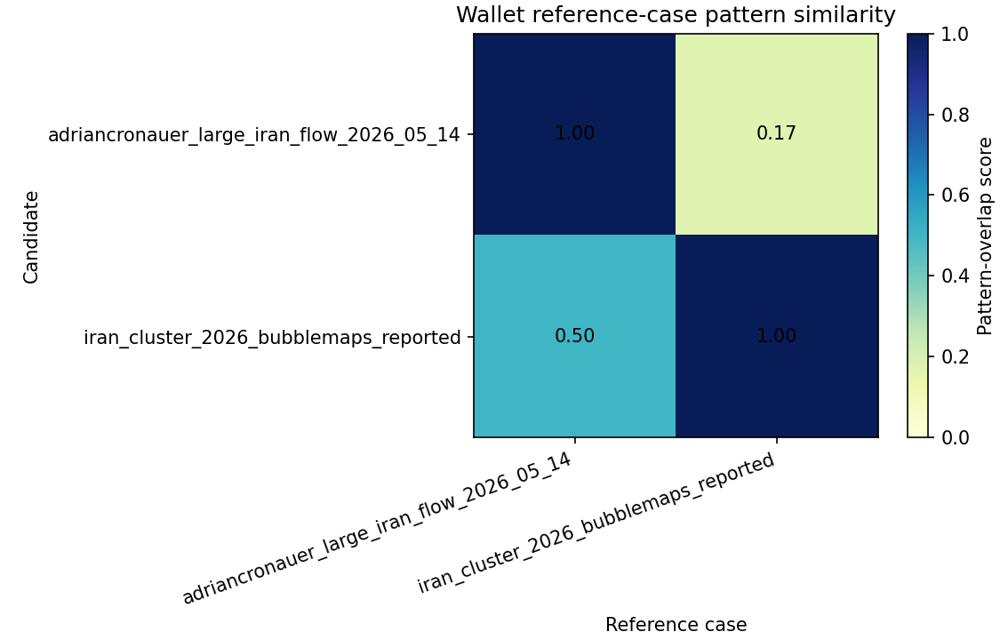

Read-only diagnostic view. Scores are equal-weight pattern overlap, not probability, proof, causality, tradeability, or profitability evidence.
| Candidate | Best reference | Score | Label | Matched patterns |
|---|---|---|---|---|
| adriancronauer_large_iran_flow_2026_05_14 | adriancronauer_large_iran_flow_2026_05_14 | 1.000 | reference_self_profile | large_trade_flow,market_concentration |
| iran_cluster_2026_bubblemaps_reported | iran_cluster_2026_bubblemaps_reported | 1.000 | reference_self_profile | cluster_link_reported,event_proximity,high_reported_win_rate,market_concentration,same_theme_repeated_positions,shared_funding_reported |

| Case | Triggered patterns |
|---|---|
| adriancronauer_large_iran_flow_2026_05_14 | large_trade_flow, market_concentration |
| iran_cluster_2026_bubblemaps_reported | cluster_link_reported, event_proximity, high_reported_win_rate, market_concentration, same_theme_repeated_positions, shared_funding_reported |
| Candidate | Reference | Score | Matched | Reference total | Label | Matched patterns |
|---|---|---|---|---|---|---|
| adriancronauer_large_iran_flow_2026_05_14 | adriancronauer_large_iran_flow_2026_05_14 | 1.000 | 2 | 2 | reference_self_profile | large_trade_flow,market_concentration |
| adriancronauer_large_iran_flow_2026_05_14 | iran_cluster_2026_bubblemaps_reported | 0.167 | 1 | 6 | partial_reference_overlap | market_concentration |
| iran_cluster_2026_bubblemaps_reported | iran_cluster_2026_bubblemaps_reported | 1.000 | 6 | 6 | reference_self_profile | cluster_link_reported,event_proximity,high_reported_win_rate,market_concentration,same_theme_repeated_positions,shared_funding_reported |
| iran_cluster_2026_bubblemaps_reported | adriancronauer_large_iran_flow_2026_05_14 | 0.500 | 1 | 2 | partial_reference_overlap | market_concentration |
High overlap means a candidate shares neutral pattern labels with a reference case. It only tells a human reviewer where to look first. Unknown fields remain unknown until direct source data are available.